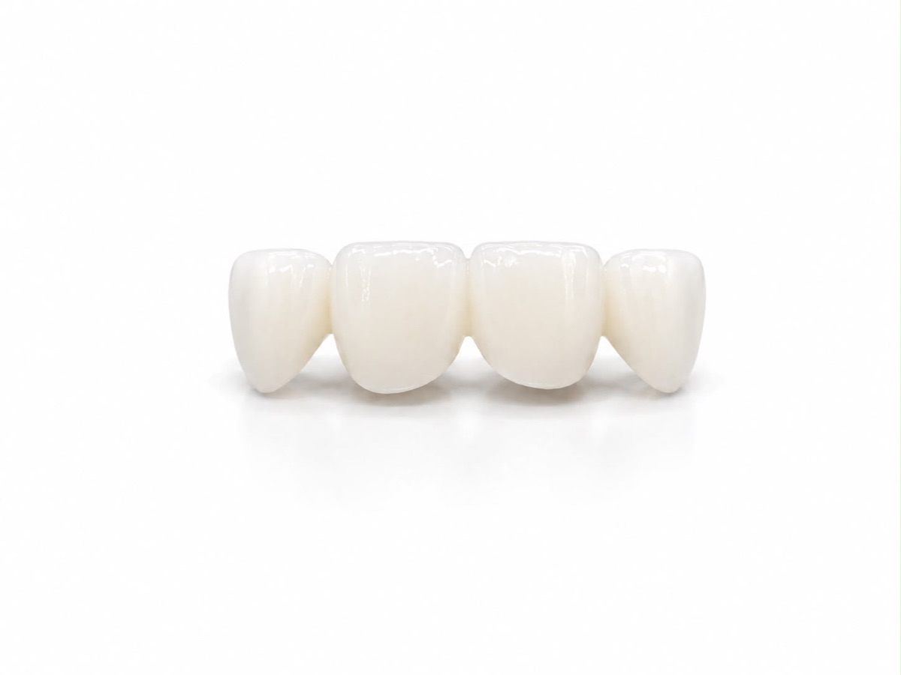
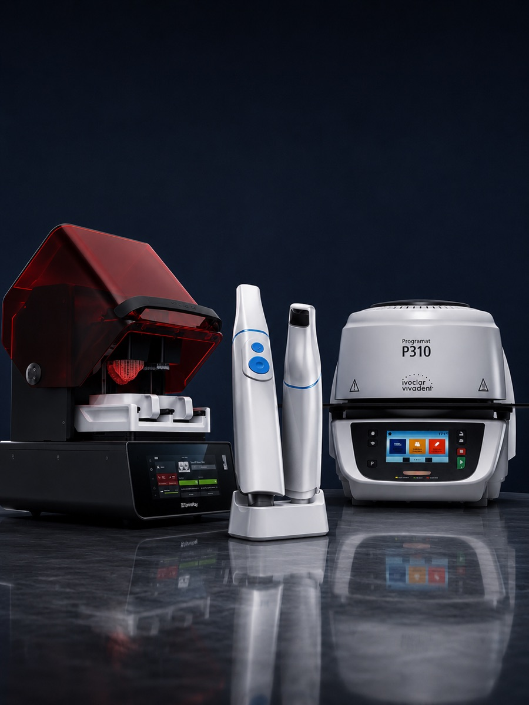

Monolitik Zirkonya · Multilayer Zirkonya · E.max · Veneer · Inlay / Onlay
Vida Tutuculu · Ti-Base · Kişiye Özel Abutment · Full Arch
Smile Design · Mockup · Photogrammetry
Cerrahi Rehber · Modeller · Geçici Restorasyonlar


Her vaka, taramadan teslimata yedi kontrollü aşamadan geçer.
Her vaka arşivlenir; aynı standartta yeniden üretilebilir.